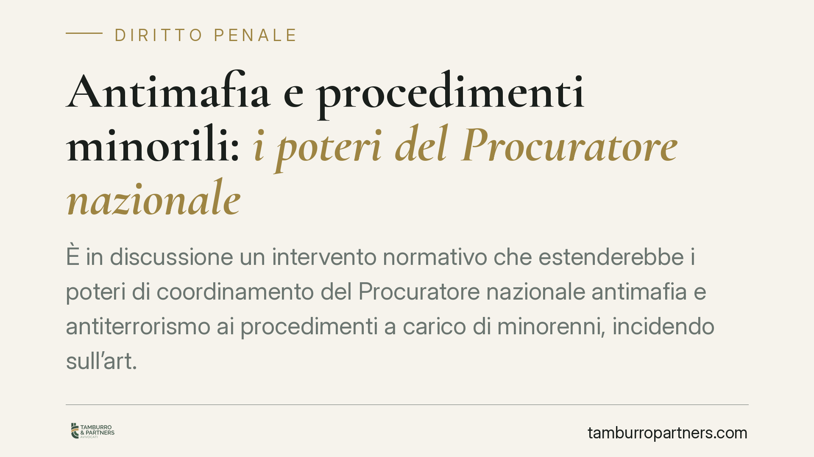

Antimafia e procedimenti minorili: i poteri del Procuratore nazionale
È in discussione un intervento normativo che estenderebbe i poteri di coordinamento del Procuratore nazionale antimafia e antiterrorismo ai procedimenti a carico di minorenni, incidendo sull'art. 371-bis c.p.p. Il tema tocca un punto delicato: il bilanciamento tra esigenze investigative sul crimine organizzato e la finalità rieducativa che caratterizza la giustizia minorile. Serve cautela nella lettura, perché il quadro è ancora in evoluzione.

Una premessa necessaria sullo stato della normativa
Prima di entrare nel merito, una precisazione doverosa su un sito a firma dello studio. L'intervento di cui si discute è veicolato, secondo le fonti, da un decreto legge recentissimo. Allo stato, il contenuto puntuale e gli estremi di pubblicazione in Gazzetta Ufficiale vanno verificati caso per caso: finché il testo non è consolidato e pubblicato, quanto segue ha valore di inquadramento generale e non di commento a norma definitiva.
Questa avvertenza non è formale. Un decreto legge produce effetti immediati dalla pubblicazione, ma deve essere convertito in legge dal Parlamento entro sessanta giorni, a pena di decadenza retroattiva (art. 77 Cost.). In sede di conversione il testo può essere modificato, anche in profondità. Parlare oggi di un assetto "definitivo" sarebbe quindi prematuro.
Inquadramento normativo
Le funzioni del Procuratore nazionale antimafia e antiterrorismo sono disciplinate, in primo luogo, dall'art. 371-bis del codice di procedura penale. La norma attribuisce al Procuratore nazionale compiti di impulso e coordinamento delle indagini condotte dalle Direzioni distrettuali antimafia (DDA), oltre a poteri di avocazione in casi determinati. Si tratta, in sostanza, di una funzione di regia sovradistrettuale pensata per i reati di criminalità organizzata e terrorismo.
L'ipotesi di riforma mirerebbe a estendere questa funzione di coordinamento anche ai procedimenti che vedono coinvolti minorenni, oggi di competenza delle procure presso i tribunali per i minorenni. Qui sta la novità sistematica: la giustizia minorile risponde a una logica propria, orientata al recupero del minore più che alla sola repressione, come affermano sia il d.P.R. 448/1988 sia i principi costituzionali e sovranazionali in materia.
Un chiarimento sulle fonti. In alcune ricostruzioni l'intervento viene collegato anche a disposizioni del Codice antimafia (d.lgs. 159/2011). Va detto con nettezza: la materia del coordinamento investigativo del Procuratore nazionale ha la sua sede naturale nell'art. 371-bis c.p.p. e nelle norme ordinamentali, non nelle disposizioni del Codice antimafia dedicate prevalentemente alle misure di prevenzione personali e patrimoniali. Ogni riferimento a quest'ultimo testo va quindi verificato con prudenza prima di darlo per pertinente.
Implicazioni pratiche
Se l'estensione dovesse consolidarsi, cambierebbe l'architettura dei rapporti tra procure minorili e Direzione nazionale antimafia. Le indagini che coinvolgono minori in contesti di criminalità organizzata – si pensi all'utilizzo di minorenni come corrieri o nella gestione di piazze di spaccio – entrerebbero in un circuito di coordinamento oggi estraneo al procedimento minorile.
Il nodo è il bilanciamento. Da un lato, l'esigenza investigativa di leggere in modo unitario fenomeni che non conoscono la soglia dei diciotto anni. Dall'altro, la tutela della specialità del processo minorile, dove la riservatezza, la personalizzazione e la finalità educativa non sono dettagli ma pilastri del sistema.
Per il minore indagato e per la sua difesa, un maggior raccordo investigativo può tradursi in una pressione istruttoria più intensa. Per i difensori, significa confrontarsi con logiche di indagine mutuate dall'antimafia in un contesto che resta, per definizione, orientato al recupero.
Cosa fare in concreto
- Verificare la fonte normativa: prima di ogni valutazione operativa, accertare su Gazzetta Ufficiale gli estremi esatti e il testo vigente dell'intervento, distinguendo tra decreto e versione convertita.
- Monitorare l'iter di conversione: è opportuno seguire i lavori parlamentari, perché modifiche in sede di conversione possono incidere sull'assetto definitivo.
- Rileggere la strategia difensiva nei procedimenti minorili a carattere associativo: valutare per tempo l'impatto di un eventuale coordinamento sovradistrettuale sulle richieste istruttorie e cautelari.
- Presidiare la specialità del rito minorile: eccepire ogni compressione della finalità rieducativa non giustificata da reali esigenze investigative.
- Documentare la posizione del minore: raccogliere per tempo gli elementi sul percorso educativo e sul contesto familiare, elementi centrali nel giudizio minorile.
Una lettura prudente
Il tema è di sistema e merita attenzione, ma impone misura. Finché il quadro non è stabilizzato, ogni conclusione va formulata al condizionale. È opportuno monitorare l'evoluzione normativa e aggiornare le valutazioni difensive man mano che il testo si consolida.
Disclaimer
Contributo informativo a cura di Tamburro & Partners - Avv. Giuseppe Tamburro. Non costituisce parere legale.
Ogni condominio ha una storia a sé.
Se gestisci un'amministrazione e vuoi un confronto su una specifica questione condominiale, scrivi allo studio. Ti rispondiamo entro un giorno lavorativo.